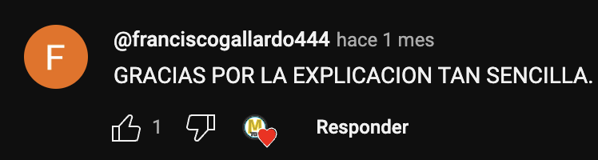

Matemáticas TOP
Francisco Muñoz Galván
Matemático por la Universidad de Málaga con más de 5 años de experiencia ayudando a estudiantes de ESO y Bachillerato a superar los desafíos de las matemáticas.
Videos Recientes
Comentarios
